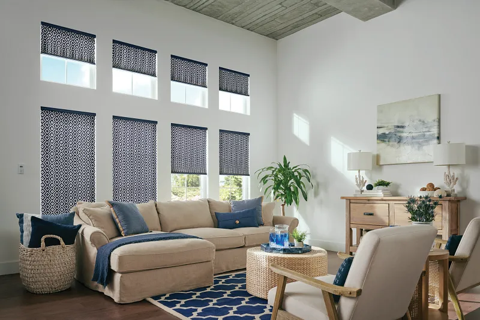
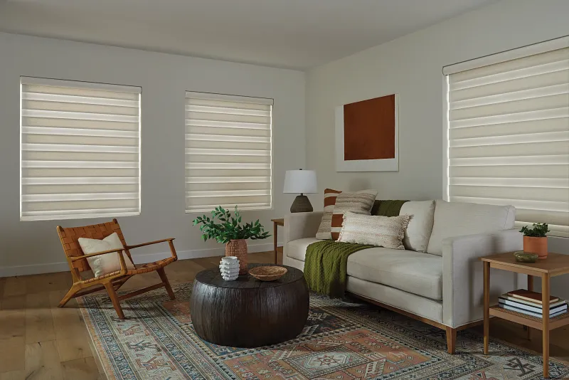
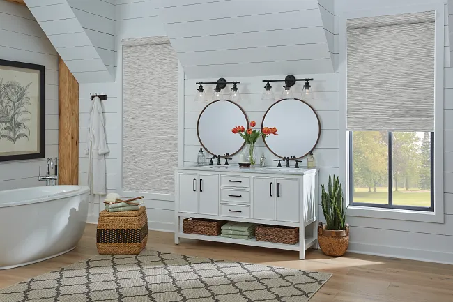
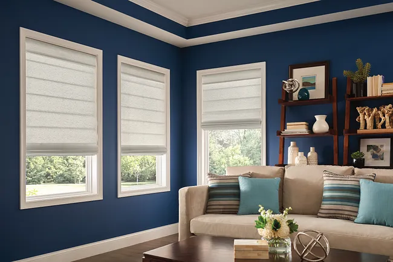
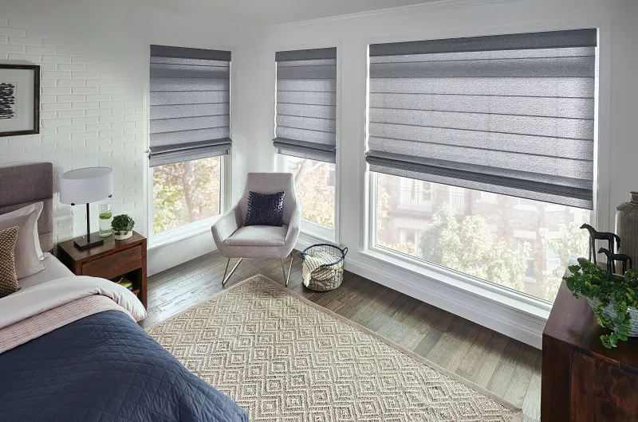

OKC’s Source for Motorized Blinds & Energy-Saving Shades
Custom motorized shades and energy-saving window treatments for Oklahoma City and Edmond — measured, designed, and installed by Brent and Edna.
Open 8:00 to 6:00 Monday - Saturday
Call Brent & Edna today at 405-259-5599for your window treatment questions.
What We Do at Shaded In The Sun
- ✓ Superior Quality & Perfect Fit — Custom-made window treatments beat ready-made alternatives
- ✓ Energy Savings — Beat Oklahoma’s intense summer heat and reduce cooling costs year-round
- ✓ Motorized & Smart Home — Voice control, scheduling, and seamless automation
- ✓ Expert Installation — Professional measurement and installation by Brent, design guidance from Edna
Shaded In The Sun Google Reviews
I contacted Shaded In The Sun for information and ideas on adding shades to my sunroom. From the initial appointment, to the measuring and installation of the shades, everything went perfectly. The shades were reasonably priced, and I am more than pleased with the entire process. The owners are friendly, professional, and very helpful! Thank you from a happy customer!

Edna is Awesome! She is very knowledgeable and personable - I really enjoy working with her - Highly recommend!!!!

Very nice and truthful company. ❤️

Great service answered all my questions, quick communication, high quality materials amazing service! Got installed in just a couple weeks after order date. Very fair price for the work done. Would highly recommend!

I found them to be focused on providing me with both services and products that I wanted. Me being satisfied was their only goal. I highly recommend them.

The Faces Behind Shaded In The Sun
Edna and Brent Buxton are a husband-and-wife team with over 30 years of entrepreneurial experience, dedicated to helping OKC homeowners enjoy beautiful, comfortable spaces. Discover how Shaded In The Sun began →
New Feature: UltraLite Cordless Lift System
Raise and lower your shades with the lightest touch — whisper-quiet, remarkably precise, and so smooth it won't wake a sleeping baby. Available on Graber solar, roller, and layered shades. Explore the UltraLite Cordless Lift System →


Norman® Window Treatments for Oklahoma City & Edmond
As an authorized Norman® dealer, we carry roller shades, cellular shades, plantation shutters, and the innovative SmartDrape™ — the world's first automated drapery track for sliding glass doors. Norman® quality is built to handle Oklahoma's extreme weather. Explore our complete Norman® collection →
Explore Our Custom Window Treatments
Motorization

Control your shades by voice, app, or schedule — from any room or anywhere in the world. Motorized shades remove cords, improve safety, and integrate with over a dozen smart home systems. Explore motorized options
UltraLite Cordless Lift System

The lightest touch raises or lowers your shade precisely — no adjustment needed. Ultra-smooth, whisper-quiet, and perfect for every age. Learn about UltraLite
Shades

Solar, roller, zebra, pleated, sheer, and more — a full range of Graber shades for every room and every light preference. Explore our complete shade selection
Cellular Shades

Cellular shades trap air in their honeycomb pockets, keeping Oklahoma heat out in summer and warmth in during winter — built-in energy savings for every room. Available in room-darkening and true blackout fabrics too. Explore cellular shades
Soft Roman Shades

Nothing showcases a beautiful fabric like a Roman shade. Graber's tailored designs use high-end fabrics and hand-craftsmanship — pair with matching drapery for a luxurious look. View Roman shade styles
Blinds

From aluminum to real wood, Graber blinds come in a wide range of styles and finishes. Discover our blind options or call 405-259-5599 to talk it through.
Ready to Transform Your Windows?
Get a free in-home consultation with Brent & Edna — no pressure, no obligation.
From the Blog
Expert guides and answers to the questions OKC homeowners ask most.
Why Is Hunter Douglas So Expensive?

Hunter Douglas can cost 2–3x more than comparable brands. Find out exactly why — and see the best OKC alternatives that look just as good for less. Read the article
Best Window Treatment Alternatives to Blinds

Not a fan of blinds? There are better options. Discover the top shades and shutters that offer more style, better light control, and easier operation. Read the article
How to See Out Your Windows
But Nobody Can See In

Get full daytime privacy without sacrificing your view. The right shade lets you see out clearly while keeping neighbors from seeing in. Read the article
Shades, Shutters & Blinds — What's the Difference?

Confused by all the options? This guide breaks down the differences between shades, shutters, and blinds so you can choose with confidence. Read the article